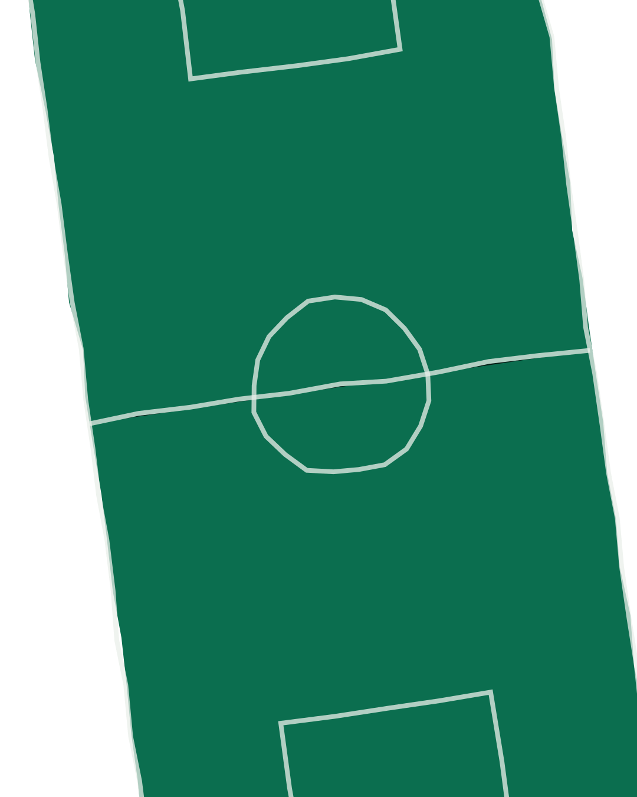

الخميس 26 نوفمبر
8:41
سوبر ملعب
دلوقتي
ساعة فضيت دلوقتي في ملعب الحرية · 9:00 م
كنت في قايمة الانتظار للساعة دي.
الخميس 9 بالليل.
وحد لغى حجزه.
قايمة الانتظار على سوبر ملعب
بتبعتلك أول ما الساعة تفضى.
SUPER MALAAB
منشن اللي بيقول "مفيش ملعب فاضي"